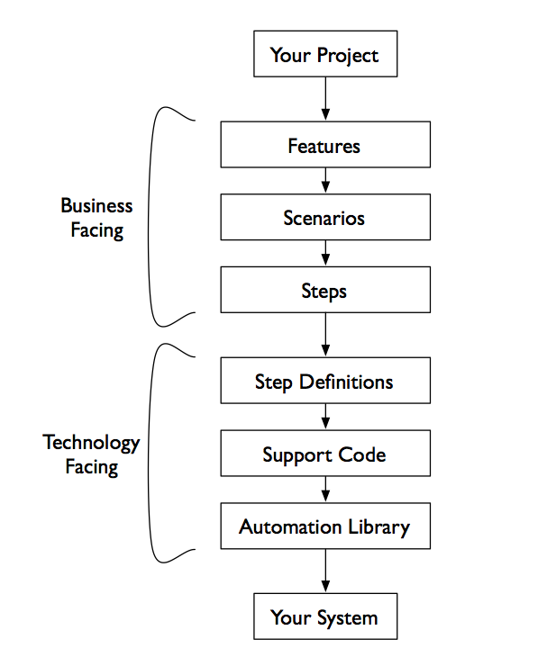

Siguiente: La API de Capybara Subir: Capybara y Rack::Test Anterior: Testeando una Aplicación Sinatra Índice General Índice de Materias
La única diferencia esta en el setup.
Vamos a usar Cucumber.
Cucumber es una herramienta para escribir acceptance tests. En la metodología TDD el stackholder/parte interesada en el negocio en vez de pasarle los requisitos al equipo de desarrollo, colabora con los desarrolladores en la escritura de las pruebas que expresan el resultado que el quiere.
Es por eso que a este tipo de pruebas se las denominan acceptance tests: intentan capturar lo que el stackholder quiere.
Estas pruebas son diferentes de los tests unitarios cuyo motivo es ayudar a los desarrolladores a comprobar su diseño software.
Se suele decir que los tests unitarios nos aseguran que construimos la cosa correctamente mientras que los tests de aceptación nos aseguran que construimos la cosa correcta.
Cuando se usa Behaviour-Driven Development BDD nos preocupamos de escribir los acceptance tests como ejemplos/examples que cualquiera pueda leer y entender.
Esto es lo que Cucumber intenta: hacer que la colaboración entre stackholders y desarrolladores sean fluída.
Este es un ejemplo de test de aceptación Cucumber:
Feature: Filling a Book Review
Scenario: Complete Book Review
Given I am on a book review site
When I submit a book review
Then I should see the saved details confirmed
Nótese como las pruebas son especificadas como examples/ejemplos de como se debe conducir el sistema en un escenario concreto.
Los ficheros de features están escritos en un lenguaje que se denomina Gherkin (pepinillo).
Cuando se usa cucumber lo primero es crear un fichero features
en el que se guardan las pruebas.
Esta es la estructura de features/chapter3/:
[~/application_testing_with_capybara(master)]$ tree features/chapter3/
features/chapter3/
|-- sinatra.feature
`-- steps
`-- sinatra.rb
1 directory, 2 files
Cada prueba Cucumber se denomina scenario y cada scenario contiene steps que le dicen a Cucumber que hay que hacer.
Este es el fichero sinatra.feature:
[~/application_testing_with_capybara(master)]$ cat features/chapter3/sinatra.feature
Feature: Using Capybara and Rack-Test to Interact with Sinatra App
Scenario: Complete Book Review
Given I am on a book review site
When I submit a book review
Then I should see the saved details confirmed
Las palabras clave Feature , Scenario , Given , When y Then son reservadas. El resto es texto. La sintáxis se denomina Gherkin. Un fichero Gherkin suele tener una estructura como esta:
1: Feature: Some terse yet descriptive text of what is desired 2: Textual description of the business value of this feature 3: Business rules that govern the scope of the feature 4: Any additional information that will make the feature easier to understand 5: 6: Scenario: Some determinable business situation 7: Given some precondition 8: And some other precondition 9: When some action by the actor 10: And some other action 11: And yet another action 12: Then some testable outcome is achieved 13: And something else we can check happens too 14: 15: Scenario: A different situation 16: ...
Es necesario implantar el significado de estos pasos.
En nuestro caso los ponemos en features/chapter3/steps/sinatra.rb.
Cucumber nos permite ponerle en cualquier subdirectorio
siempre que la extensión sea .rb.
Estos son los contenidos de steps/sinatra.rb:
[~/application_testing_with_capybara(master)]$ cat features/chapter3/steps/sinatra.rb
Given(/^I am on a book review site$/) do
visit('/form')
end
When(/^I submit a book review$/) do
fill_in 'name', :with => 'Matt'
fill_in 'title', :with => 'Catch 22'
fill_in 'review', :with => 'Alright I guess....'
select '20 - 50', :from => 'age'
click_on 'Submit'
end
Then(/^I should see the saved details confirmed$/) do
page.should have_text 'You submitted the following on:'
expect(find('#name')).to have_text 'Matt'
expect(find('#age')).to have_text '20-50'
expect(find('#review')).to have_text 'Alright I guess....'
expect(find('#title')).to have_text 'Catch 22'
end
Cucumber falla un step si su definición genera una excepción (raise).
Junto con las features le damos a Cucumber un conjunto de step definitions como el anterior.
En este fichero establecemos una correspondencia entre el lenguaje orientado al cliente y el código Ruby que debe llevar a cabo las acciones.
Es aquí donde interviene Capybara que nos provee de un DSL para la automatización del navegador.
Esta jerarquía, desde las features hasta las librerías de
automatización como Capybara pueden ilustrarse así:

El fichero support/env.rb gobierna la configuración:
[~/application_testing_with_capybara(rack_version)]$ cat features/support/env.rb require 'bundler' Bundler.require require 'capybara/cucumber' require 'rspec/expectations' require_relative '../../sinatra/app' Capybara.default_driver = :rack_test Capybara.app = BookReview #our Sinatra app
Capybara.app
a la clase de nuestra aplicación Sinatra (BookReview).
En el caso de una aplicación sinatra clásica pondríamos:
Capybara.app = Sinatra::Application
Capybara.default_driver a :rack_test
de manera que se use Rack::Test en vez de Selenium. De este modo
la ejecución será mucho mas rápida.
capybara, con rspec
y cargamos nuestra aplicación para que pueda ser testeada:
require 'capybara/cucumber' require 'rspec/expectations' require_relative '../../sinatra/app'
Bundler.require:
require 'bundler' Bundler.requireitera sobre cada gema en el
Gemfile y hace un require
de todas las gemas que no hayan sido explícitamente
desabilitadas con
la opción :require => false.
Es posible pasarle una lista de grupos:
Bundler.require(:default, :development)
[~/application_testing_with_capybara(master)]$ cat Rakefile task :default => :rackfeatures task :rackfeatures do sh "cucumber -r features features/chapter3/sinatra.feature " end
[~/application_testing_with_capybara(master)]$ rake
cucumber -r features features/chapter3/sinatra.feature
Feature: Using Capybara and Rack-Test to Interact with Sinatra App
Scenario: Complete Book Review # features/chapter3/sinatra.feature:3
Given I am on a book review site # features/chapter3/steps/sinatra.rb:1
When I submit a book review # features/chapter3/steps/sinatra.rb:5
Then I should see the saved details confirmed # features/chapter3/steps/sinatra.rb:13
1 scenario (1 passed)
3 steps (3 passed)
0m0.070s
Hay al menos dos desventajas